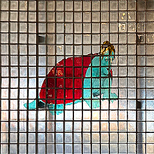

hello, my name is Matthew.
i made the DEADWORLD with Shae.
i'm a doing-wanting person from Nashville, Tennessee.
i've also previously been from New York's Flatbush Appalachian Synod (ᨒ♱) but i grew tired of much of the artifice required by the inherent contradictions of the input and output.
there are more trees in Nashville but i intend to find somewhere better soon.